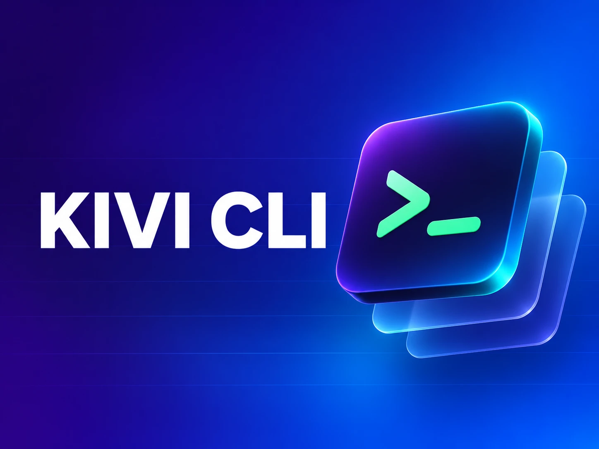

即将上线 · 占位页KIVI CLI
在终端里调用 KIVI：生成图片、视频，批量跑任务，接进你自己的脚本和工作流。
# 示例命令，正式发布后以文档为准 $ kivi login $ kivi image "一只戴巫师帽的猕猴桃" --model gpt-image-2 --ratio 16:9 $ kivi video ./ref.png --model seedance-2.5 --duration 5
- 命令行生成图片、视频、音频，一条命令出结果
- 批量任务读一份表格，一次提交几百条
- 接进工作流结果直接存进「我的资产」